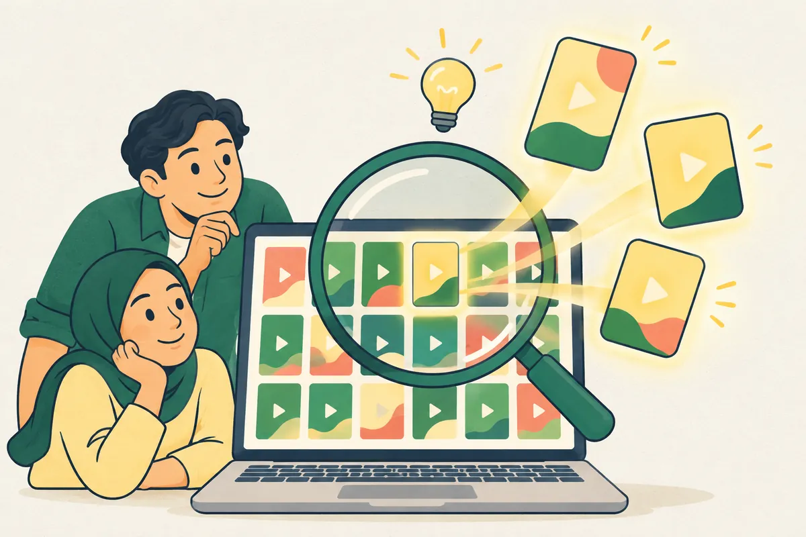
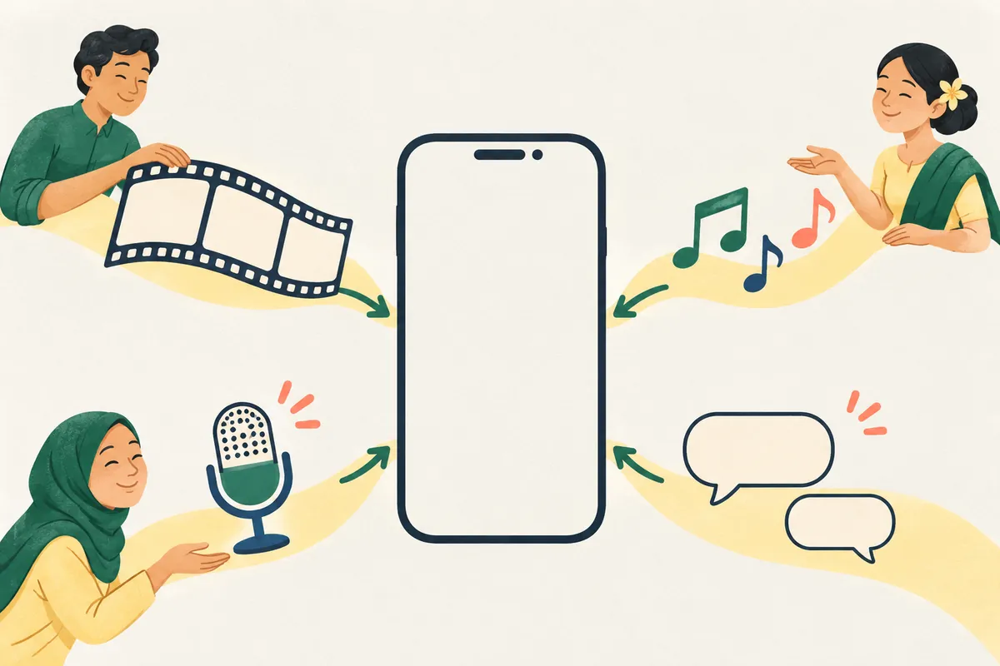
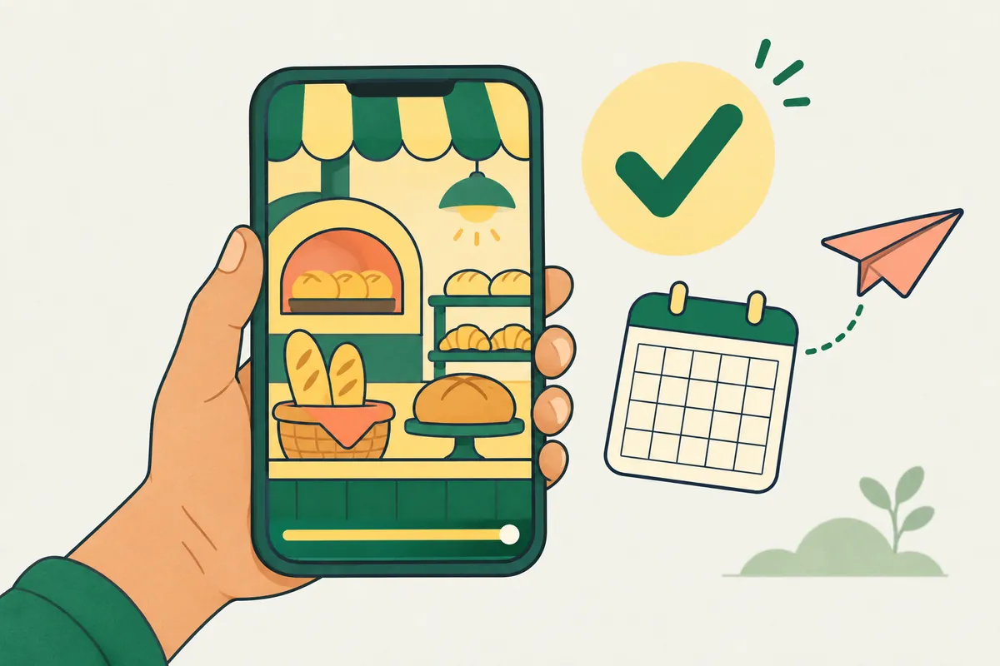
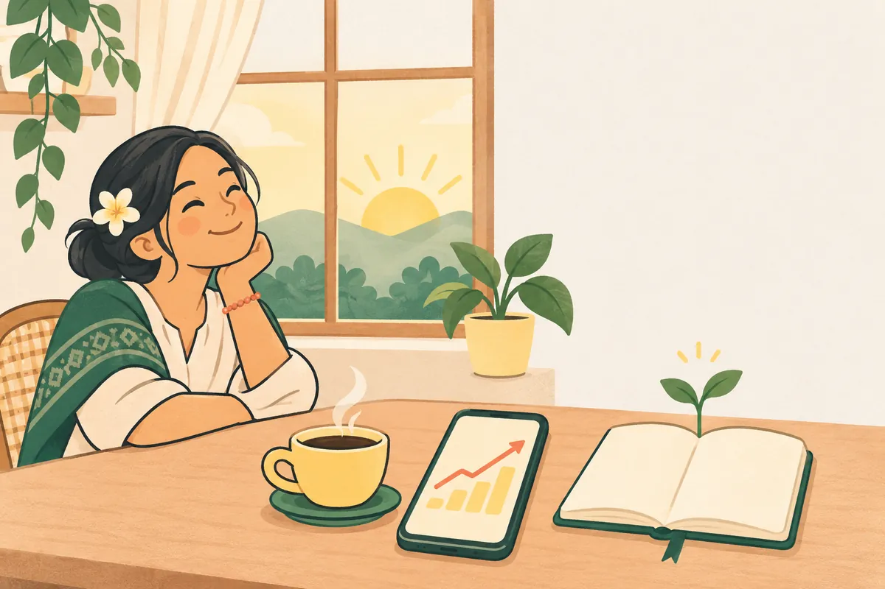

Prompt kit
Prompts for websites, systems and videos
Pick a tab. Start with the starting prompt, then add the extra lines for what you are making. Replace everything in [brackets].
1 · The starting prompt
Works for everything. The last line matters most: it makes the AI ask questions and show a plan before it writes any code.
General starting prompt
I want to build [a website / a system] for [business or project name]. Who will use it: [customers / my staff / only me]. What they must be able to do: 1. [first thing] 2. [second thing] 3. [third thing] What it needs to remember: [nothing / bookings / customers / orders / ...]. Payments: [none / on WhatsApp / online by card or bank]. Login: [none / customers log in / only staff log in]. Must work on: [phone / laptop / both]. Languages: [English / 中文 / BM]. Budget: about [amount] per month. I need it by [date]. Rules: ask me before anything that costs money, deletes data or messages my customers. Never put passwords or keys in the code or on GitHub. Before writing any code: ask me what is unclear, then show me a simple plan (the pages or screens, where the data is kept, which accounts I need, the monthly cost). Wait for my OK.
2 · Add the lines for your kind of system
Not sure which one you are? Website or system explains the difference.
Information website
For a coach, shop front, company profile or portfolio. Example: Life Garden.
Pages I need: [Home, About, Services & prices, Contact]. Every "Book" or "Buy" button opens WhatsApp to [number] with a ready message. My design and photos are in [folder]. Keep my text and prices exactly as written. It must look right in light and dark mode on phones.
Booking or appointment system
For clinics, salons, coaches, classes, rooms.
Services: [name, how long, price] for each. Opening hours: [days and times]. Two people must never book the same slot. Customers book with [name, phone, email]. Bookings are [confirmed at once / confirmed by staff]. Send a reminder [1 day] before by [email / WhatsApp]. Staff log in to see today's bookings and can cancel or move one.
Online shop or payment
For selling products, tickets, reports or classes online.
Products: [name, price, photo] for each. Payment by [card / FPX / DuitNow / e-wallet]. After paying, the customer gets [an email receipt / a code / a download]. I get notified by [email / WhatsApp] for every order. Set it up in TEST mode first, show me a test payment, and only switch to real money when I say so. Tell me the payment company's fee per sale.
Staff tool or tracker
Customer lists, task trackers, stock, attendance. Only your team uses it.
Each record has: [field 1, field 2, field 3 ...]. Who can do what: [owner sees everything; staff can add and edit but not delete]. I need to search, filter by [field], and export to Excel. Keep a log of who changed what, and back up the data every day.
AI tool (chatbot, AI report)
A chatbot that answers from your material, or a questionnaire that writes a personal report.
The user gives: [answers to [N] questions / a question / an uploaded file]. The AI gives back: [a report with these sections ... / an answer in [tone]]. It must only use [my material in folder ...] and say "I don't know" when the answer is not there. Language: [English / 中文 / BM]. Tell me the cost per use and set a monthly limit of [amount]. Don't keep personal data longer than needed.
Automation
Daily reports, birthday reminders, follow-up emails, copying data between apps.
Every [day at 8am / Monday / time a form is sent], do: [what]. Take the data from [Google Sheet / my system / an email inbox]. Send the result to [who] by [email / WhatsApp / Telegram]. Test it by sending only to me first. If it fails, email me what went wrong.
AI Office (3D staff dashboard)
Turns your Claude Code scheduled tasks into 3D staff who show what they are doing. Use this one on its own, after you have at least one scheduled task.
Build me an "AI Office": a live 3D dashboard where each of my Claude Code scheduled tasks appears as a staff member.
Publish it as a claude.ai artifact, using Three.js from cdnjs and the artifact db to store staff status.
LOOK
- Isometric low-poly night scene: navy background, green island, pale paths, trees and glowing street lamps
- One open-front room per team: cream walls, gold trim, coloured rug, a name sign and report boards on the wall
- One desk per staff member, with a monitor, plant and cup
- Cute chibi characters with big round heads, each with their own colours and hair
- Drag to rotate, scroll to zoom
STAFF
- First list my scheduled tasks. Each task = one staff member with a short human name. Group them into rooms by type of work.
- Store each one at staff/<taskId> with: name, job, room, taskId, schedule, nextRun, lastRun, status, say, report, updatedAt, history[{at,text,ok}]
- Status is idle, working, error, waiting or off
- Use real run results from the task history. Never invent any.
ANIMATION BY STATUS
- working: typing, monitor glowing blue, speech bubble
- idle: gets up now and then and walks around the room
- waiting: raises a hand, amber bubble
- error: head down, red pulsing ring on the floor
- off: head down, monitor off
- If nextRun has passed and status is still idle, flag it as overdue
SCREEN
- Top bar with counts: On duty, Working, Error, Needs you
- Name tag above each character
- Clicking one opens a dark staff card: job, task, shift, next shift, last shift, report, last update, recent shifts, and a button that copies a "run this task now" order
CLOCK-IN
- Show me the change first, then add a step to each task's prompt: write status "working" when it starts, and the result, report and next run when it finishes, using db_write
- Only report success if the job really happened, not just because the run ended
Show me the staff list before publishing. Don't change any task without asking.3 · Prompts while you build
Check before calling it done
Before you say it's finished: test every page and button, in every language, on phone and laptop size. Show me what you checked, what you found and what you fixed.
Publish
Save it to a private GitHub repo and publish it so it updates every time we save. Tell me the monthly cost first and wait for my OK.
Report a problem
On my [phone / laptop], [page or screen] shows [what I see], but I expected [what I wanted]. Find the cause, fix it, and tell me in one sentence what it was.
Explain it simply
Explain what you just did in simple words, as if I have never coded. What changed for my customers, and is there anything I need to do?
Connect a domain
I bought [domain.com] at [provider]. Connect it to my site and tell me step by step what to change at [provider].

Let the AI make your reels
You don't need to know editing. Tell the AI about your account once. After that it finds the idea, makes the reel, checks it, posts it when you say OK, and learns from the results.
What you need: an AI that can work on your computer, like Claude Code in the Claude desktop app. One prompt per step. The only things you do yourself: sign in to your accounts when it asks, and say OK before it posts.
The examples follow one small business, a home bakery, from the first message to the morning report.
Once only
Tell the AI about your account

The AI installs what it needs, connects to your account and saves your answers as a brief. You never type this again.
Set up
Set yourself up to make reels for my account. Do every step yourself: install the video tools or skills you need, connect to my [Instagram / TikTok] so you can read my stats and post, and only stop when I must sign in or approve something. My account: [name], about [what I post]. Who watches: [who]. Language: [English / 中文 / BM]. What I want from reels: [follows / shares / sell [product] / bookings on WhatsApp]. Targets: skip rate under 30%, average watch at least half, 2+ follows and 5+ shares per 1,000 views. My photos and videos are in [folder / "none, make them with AI"]. Rules: never invent facts, numbers or reviews. Never post or spend money without my OK. Save this as my account brief and use it for every reel.
Example
… My account: our home bakery, fresh bread and cakes in Petaling Jaya. Who watches: mums 25 to 45 nearby. Language: 中文 and English. What I want: orders on WhatsApp. My photos and videos are in Pictures/Bakery.
Every reel
Let the AI find the idea

The AI looks at the best and worst reels in your topic and your own results, then brings you 3 ideas. You only choose.
Find ideas
Find my next reel idea. Do the research yourself: study the top and the worst reels in my topic (any language) and my own past results. Give me 3 ideas. For each: the hook line (said in under 3 seconds), what happens, who people will send it to, and why it should hit my targets. Mark the one you would pick. Save what you learned so the next idea starts smarter.
Example
Find my next reel idea.
1 (my pick). 「香蕉黑了别丢！」 Overripe bananas become banana bread in 30 seconds. People send it to the friend who always throws bananas away.
2. 3 signs your bread came from a factory, not a bakery.
3. Baking 200 pineapple tarts for one order, overnight.
Every reel
Let the AI make it

Script, voice, music, captions, the edit and the cover: the AI does all of it, using your own photos and videos first.
Make the reel
Make idea [1]. Do everything yourself: script, voice, music, captions, the edit and the cover. Use my own photos and videos first. If something is missing, make it with AI images. Show me the finished video before anything is posted.
Example
Make idea 1.
Every reel
The AI checks it, you say OK

The AI watches it like a viewer, fixes the weak parts by itself, writes the caption and picks the best time. Nothing goes out until you say OK.
Check and post
Check the reel before posting: watch it like a viewer and score it against my targets. If it is weak, fix it yourself and check again. Then write the caption and hashtags, pick the best time, and post it after I say OK.
Example
Check it and post it.
Caption: 「香蕉黑了别丢！30 分钟变香蕉面包 🍌 Send this to the friend who always throws bananas away.」
Best time: tonight, 8 pm. Post it?
OK.
Don't like something? Just say what and where, like "At 0:05 it's slow" or "the music is too sad". The AI fixes it.
Once, then it runs by itself
Let the AI learn every morning

Set this once. Every morning the AI reads your numbers, keeps the lessons and has the next idea waiting for you.
Daily review
Every morning at [8am], do this by yourself: pull yesterday's stats, tell me in 3 lines what worked and what didn't (shares first), save the lessons, and give me today's reel idea. If my computer was off, do it when it is back on. Never post without my OK.
Example: the next morning
Worked: the hook at 0:01 and the "send this to" line. Didn't: the cover was dark, so few people tapped it from your profile.
Lesson saved. Today's idea: 3 breads you can freeze for a week.
After step 1: one line does it all
Once the AI has your brief, this one prompt runs steps 2, 3 and 4 in a row.
Next reel, start to finish
Make my next reel from start to finish: find the idea, make it, check it, and show me the finished video with the caption. Post it when I say OK.